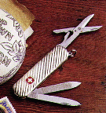

Linux et le clavier Suisse romand
Article pour l'Echo de Linux (Juillet 1996)
Jean-Albert Ferrez
(ferrez@dma.epfl.ch)
Allez, on redescend tout de suite sur terre, la Suisse romande n'est
pas si différente des autres régions du globe, ni
même des autres régions francophones. Simplement, il y a
quelques détails à changer par rapport à une
configuration franco-française telle qu'on la trouve dans le Guide du ROOTard,
principalement autour du clavier.
- Le clavier Suisse romand en mode console
- Le clavier Suisse romand sous X-Windows (XFree86)
Généralités sur les claviers Suisse romands
Les PC vendus en Suisse sont en général
équipés d'un clavier spécial, dont le plus proche
voisin est le clavier anglais QWERTZ (UK et non pas US), et assez
différent du clavier français AZERTY (Les mauvaises
langues diront que c'est le clavier français qui est
différent de tout ce qui existe, mais bon...) Sans entrer dans
des détails qui n'intéressent que ceux qui les
connaissent déjà, citons que l'on obtient directement ou
par un simple Shift la plupart des lettres accentuées
"simples", les trémas, circonflexes, aiguës et
graves, plus rares étant simulées par le truchement de
touches mortes, comme sur la machine à écrire de ma
grand-mère. Les symboles informatiques @ # [ ] { } ~
nécessitent eux la touche Alt-Gr.
Un mot encore au sujet des caractères accentués. Nous
ne nous intéressons ici qu'à leur saisie au clavier, pas
à leur affichage dans bash, tcsh, emacs, vi, truc ou autre. Ce
sujet est abondamment documenté, entre autres dans le Guide du ROOTard.
Le clavier Suisse romand en mode console
C'est loadkeys qui se charge de changer la configuration du
clavier. Ce programme se trouve dans toute bonne distribution linux
dans /usr/bin/loadkeys et dans un package kbd-0.91
pour ceux qui font tout à la main. Il vient avec une liste de
fichiers de description de claviers, généralement
placée dans /usr/lib/kbd/keytables. C'est le
sf-latin1.map qui nous intéresse. Il suffit de faire
un petit
/usr/bin/loadkeys /usr/lib/kbd/keytables/sf-latin1.map
et on est tout bon (mettre cette ligne dans le fichier
/etc/rc.d/rc.local). Il y a aussi un sg-latin1.map
pour permettre à ceux qui tapent de temps en temps dans la
langue de Goethe sur clavier Suisse allemand de changer de clavier en
deux coups d'alias bien pensés.
Pour aller plus loin
Les fichiers *.map sont de simples fichiers ASCII
établissant l'équivalence entre le code d'une touche et
celui du caractère devant apparaître en fonction des
modificateurs (Shift, Alt-Gr,...). Il est donc tout à fait
possible de le modifier pour se concocter une version
personnalisée. (Attention lors de mises à jour du
système !)
Le clavier Suisse romand sous X-Windows (XFree86)
Sous X11, c'est xmodmap qui se charge de la configuration du
clavier. Il utilise lui aussi un fichier de description qui - on s'en
doute - n'est pas le même que pour loadkeys. Et comble
de malheur, X11 (ou en tout cas XFree86) ne vient pas avec une liste
de claviers prédéfinis. Mais avant que xmodmap
n'entre en jeu, XFree86 - depuis la version 3.1.2 du moins - essaye
tout de même de faire de son mieux en reprenant la configuration
du clavier sous la console et en fonction des paramètres des
locale. Mais il faut de toutes façon touiller un peu :)
Les fichiers concernés
/usr/X11R6/lib/X11/locale/iso8859-1/Compose
Ce fichier va trop loin à mon goût sur les points suivants :
- La touche ~ est une touche morte. Or d'une part les caractères
composés avec une tilde sont rares en français et
d'autre part ce caractère est utilisé sous UNIX.
- Les autres touches mortes ´ ` ^ ¨ frappées deux fois de
suite ou suivies d'un espace ne donnent pas le caractère
correspondant.
Voici mon fichier modifié. On peut soit
remplacer purement et simplement le fichier original, soit mettre
cette version dans un fichier Compose.fr_CH, puis modifier
l'entrée correspondante du fichier
/usr/X11R6/lib/X11/locale/compose.dir.
Xmodmap
Il est encore nécessaire de changer quelques petites choses
à l'aide d'un fichier Xmodmap :
Le tilde n'est pas une touche morte, par contre, avec shift il le
devient. Les guillemets typographiques françaises ainsi que
divers caractères spéciaux sont accessibles via la
touche Alt-Gr. On le charge soit avec un xmodmap
/usr/X11R6/lib/X11/xinit/.Xmodmap dans le xinit du
système, soit avec un xmodmap ~/.Xmodmap depuis le
.xinit des utilisateurs, soit encore ailleurs. (Dans
certaines distributions, c'est fait par défaut.)
Pour aller plus loin
La commande xev permet de voir les codes et symboles que le
serveur X associe à chaque touche du clavier.
La commande xmodmap -pke génère le fichier
correspondant à la configuration actuelle. Il est ensuite
facile de le modifier. Là encore, il est tout à fait
possible de se faire plusieurs versions personnalisées et d'en
changer à la volée, par exemple à l'aide d'un
pop-up menu du window manager.
Remarque finale
Les idées et fichiers de configuration donnés ici ne
reflètent que ma vision personnelle du clavier Suisse romand et
de son utilisation. Je n'ai en particulier suivi aucune règle
ou norme officielle. De même, ma manière de configurer le
serveur X peut ne pas plaire à tous... Je suis par contre
ouvert à toute suggestion ou information technique sur le
sujet.
Jean-Albert Ferrez - (ferrez@dma.epfl.ch) - Home Page
Mon Jul 22 11:26:33 1996